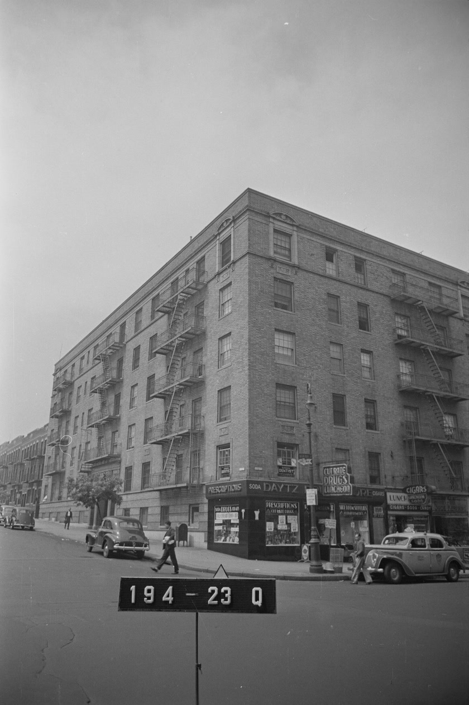
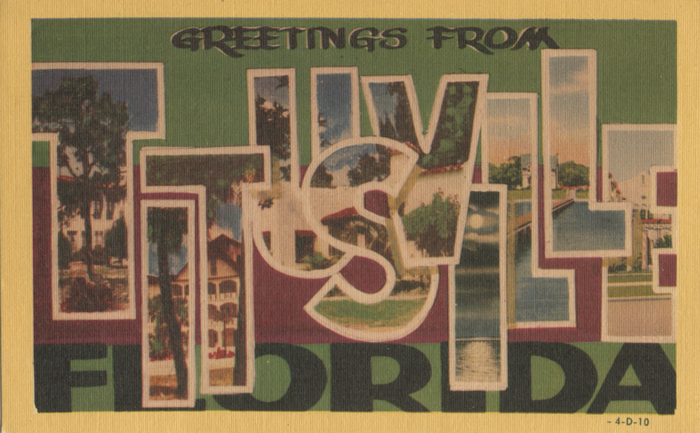
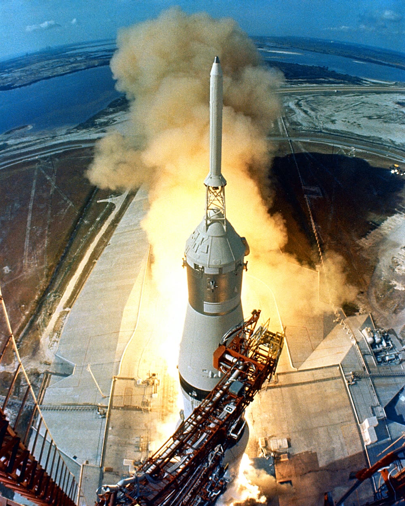

Nicole’s father’s side
The Anderau Family
Frederick and Vivian, and their four sons
New York City · Queens · Miami-Dade · Titusville
Researched November 2026
Nicole and her sister Dawn are the daughters of Russ Anderau and Joy Henry. This page follows Russ’s parents, Frederick and Vivian (Mule) Anderau, and the places public records put that family. Every statement carries a label saying how firmly the records support it. Living people are named by first name only, and no private details are given. Photographs are pictures of places in those years. None of them is a family portrait, and none is a picture of a known family address.
01 — How to read this page
Confidence labels
- Confirmed A public record states it directly, or the family has confirmed it (marked “confirmed by family”).
- Likely Strong, consistent evidence, but no single record yet ties every part together.
- Unverified A lead, or something searched for and not found.
The same labels apply to places. A city history that follows a place label is context for that city and those years. It is not a claim that someone in the family stood in the photograph or took part in the event.
- Nicole and her sister Dawn, daughters of Russ Anderau and Joy Henry
- Russ’s parents: Frederick Anderau Confirmed and Vivian (Mule) Anderau Confirmed
- Frederick is likely Frederick Frank Anderau, 1926–1971, buried in North Miami Likely
- Russ’s brothers: Rick (1951–2024), Ron, and Rob Confirmed
- Russ’s parents: Frederick Anderau Confirmed and Vivian (Mule) Anderau Confirmed
02 — The family
Frederick and Vivian (Mule) Anderau
Russ’s parents were Frederick Anderau and Vivian Anderau, born Vivian Mule. Confirmed The 2024 obituary of Russ’s older brother, Frederick “Rick” C. Anderau, calls him “the oldest of four sons, to the late Frederick and Vivian (nee Mule) Anderau,” and names his surviving brothers Russ, Ron, and Rob.
Rick was born March 8, 1951, in New York, New York, and died May 24, 2024, in Port Orange, Florida. The obituary says he served in the U.S. Air Force from 1970 to 1974. He chaired the Titusville Area Chamber of Commerce from 1984 to 1986. Confirmed The obituary does not name a New York borough or a street, and it does not name an Air Force base.
Frederick Anderau
Likely The elder Frederick is probably Frederick Frank Anderau, born May 23, 1926, died February 11, 1971, at age 44, in Miami. He is buried at Southern Memorial Park, North Miami, where Find a Grave marks him as a veteran. The Brevard County TODAY newspaper indexed an obituary for “Anderau, Frederick F. A.,” age 44, on February 19, 1971, page 3B. Brevard is where Rick later lived and worked.
Why only likelyThe grave memorial names no wife or children, and the 1971 newspaper notice itself has not been read. That notice, held by the Central Brevard Library, should settle whether this is Vivian’s husband and the father of the four sons.
If this identification is right, Frederick’s family was:
- Mother: Elsie J. Hellwig (also spelled Helwig) Anderau, September 6, 1893 – July 21, 1963, buried at Southern Memorial Park, North Miami. Find a Grave links her as Frederick Frank’s mother. Likely
- Brother: Sergeant Charles William Anderau, born August 18, 1921, in Queens, New York, and recorded with that hometown. He was a radio operator in the 331st Bomb Squadron, 94th Bomb Group, U.S. Army Air Forces. He was killed in action on February 10, 1944. The Fields of Honor record gives his B-17’s destination that day as Brunswick, Germany, and does not name the place he was killed. He received the Purple Heart and is buried at Ardennes American Cemetery in Belgium. The Fields of Honor database names his mother as Elsie J. (Helwig) Anderau and his brother as Frederick. Likely as Nicole’s great-uncle. His own birth, hometown, service, and death are Confirmed for this Charles.
- Father: not named in any record found. Unknown
Vivian (Mule) Anderau
Vivian’s maiden name, Mule, comes from her son’s obituary. Confirmed A commercial directory compilation lists a “Vivian L. Anderau” in Titusville, which suggests a middle initial L. Likely The compilation is undated, and her birth and death dates, burial, and parents were not found. Rick’s 2024 obituary calls her “the late,” so she had died by then. Street addresses and telephone numbers from that compilation are not repeated here.
Not this familyTwo unrelated Anderau families turned up in the search and are left out here: Emil and Elizabeth (Oberhansli) Anderau of Yonkers, New York, and the Earl and Katherine (Turney) Anderau family of California and Texas.
03 — Where they lived
Places, and what those places were like
The records do not yet give one household a continuous address. They put people in four places, at different levels of certainty, with a long gap in between.
- Confirmed Rick was born in New York City on March 8, 1951. The obituary does not name the borough.
- Confirmed Charles William Anderau was born in Queens in 1921, and Queens was his hometown in his wartime record. He is likely the elder Frederick’s brother.
- Likely Frederick Frank Anderau died in Miami on February 11, 1971, and is buried at Southern Memorial Park in North Miami. Elsie is buried there too. This is the likely father and grandmother, not yet a proved home of Russ’s childhood.
- Confirmed Rick chaired the Titusville Area Chamber of Commerce from 1984 to 1986. A commercial index of Florida corporate filings also associates Frederick C. Anderau and Rick Anderau with Titusville businesses in the early 1990s. The official state filing images could not be opened for this page.
- Likely Undated directory compilations associate Vivian L. Anderau and Joy Anderau with Titusville. No public record found for this page names Nicole or Dawn, or states the city where they were raised.
- Confirmed Rick died in Port Orange, Florida, on May 24, 2024. That is the place of his death, not a documented childhood home.
New York City and Queens
Confirmed for Rick’s birth in 1951, and Confirmed for Charles’s birth and hometown a generation earlier. Likely for the elder Frederick’s childhood, and only if he is Charles’s brother Frederick Frank.
Nothing found names the street, the borough of Rick’s birth, or the year the household left New York. Charles was already dead when Rick was born. Elsie was buried in North Miami in 1963, so at least one member of that older generation had a Miami-Dade connection by then, if the grave link is right. Between Rick’s birth in the city in 1951 and a likely death in Miami in 1971, the family’s address is not in any record read for this page.
Queens in 1940 was a city of apartment buildings over corner stores, which is what the municipal tax photograph below shows. It is one building in Sunnyside, block 194, lot 23, at 45-08 40th Street. It is not a known Anderau address. It is here because it is an openly licensed picture of ordinary Queens housing in the years Charles’s generation was grown and the next generation had not yet been born.

.jpg){kind=link}
No openly licensed photograph of New York in 1951, the year of Rick’s birth, was found to place beside it. The obituary’s “New York, New York” is the city. It is not, by itself, a Queens address.
Miami and North Miami, 1940s–1970s
Likely as the place Frederick Frank Anderau died and was buried, and as Elsie’s burial place. Not confirmed as the house where Russ grew up. No record read for this page gives the family a Miami street.
North Miami was a small town before the war and a suburb after it. Incorporated in February 1926 as the Town of Miami Shores, it was renamed the Town of North Miami in 1931 and became a city, with a city manager, in 1953. The U.S. Census counted 1,973 people there in 1940, 10,734 in 1950, 28,708 in 1960, and 34,767 in 1970. The 1950 and 1960 figures are in the 1960 census volume for Florida. The jump is the postwar suburb: new houses on land that had been platted in the 1920s boom and then left thin through the Depression.
Southern Memorial Park opened in 1941 on the site of a failed boom-era subdivision, Fulford Gardens. A Miami-Dade County preservation study calls it northeast Miami’s first non-sectarian burial ground, and one of the first Florida cemeteries laid out as a “perpetual care” memorial park, with lawn-level markers instead of upright headstones. The same study says the grounds were designed by William Shanklin, with fountains, a reflecting pool, and a singing tower, and were advertised as “the Cemetery Beautiful.” The county report notes that the cemetery now operates as Caballero Rivero Southern Cemetery. Find a Grave still records Frederick Frank and Elsie under the older name, Southern Memorial Park, North Miami.
If the grave identification is right, Elsie was buried there after her death in 1963, and Frederick Frank was buried there after his death in Miami on February 11, 1971. He was 44. Rick, the oldest son, was 19 that year. The Brevard newspaper’s obituary index noticed the death eight days later. That is a clue that someone in Brevard was connected to him. It is not, until the notice is read, proof that the household had already moved to Titusville.
No openly licensed photograph of North Miami from the 1940s, 1950s, or 1960s was found to download for this page. The census counts and the cemetery study are the picture the records support.
Titusville and the Space Coast
Confirmed for Rick’s civic life in the mid-1980s, and for business filings indexed to Titusville in the early 1990s. Likely that Vivian and Joy have been associated with the city, from undated directory compilations. Not found is any record on this page that names Nicole or Dawn, or that says where Russ and Joy raised them.
The Titusville Area Chamber of Commerce lists “1984–86 Rick Anderau” among its chairs. A commercial index of Florida corporate records lists Frederick C. Anderau as president of Brevard Office Equipment, Inc., a Titusville company whose last indexed event was in 1995, and lists Rick Anderau in connection with the Florida Office Products Association at a Titusville business address. Those are workplaces, not a home. The Division of Corporations site itself could not be opened while this page was written, so the index is a secondary copy of the filings. Rick’s Air Force service, 1970–1974, has no base attached to it here, so those years are not placed in Titusville.
What the city was like in the Apollo years is a different subject from whether this family was there to see it. Titusville had been a small Indian River town. The Census Bureau’s series, as set out in a local study of the boom, counts 2,604 people in 1950 and 6,410 in 1960, then 30,515 in 1970. Much of that last jump was annexation: Whispering Hills and Indian River City were taken into the city in the 1960s, and the 1970 census counted 7,802 people inside the old 1960 limits. The growth that was real came when the work moved north. Missile testing had been centered on Cape Canaveral and Patrick Air Force Base. In 1961 NASA chose Merritt Island, across the Indian River from Titusville, for the manned moon program. U.S. 1 was widened. New causeways, including the one later called the NASA Causeway, carried workers onto the island. The county built schools faster than classrooms could hold the children. By the mid-1960s realtors were calling the coast from about Daytona Beach to Fort Pierce the Space Coast. Launches drew crowds to the city’s parks on the west bank of the Indian River.
None of that is an Anderau memory unless a record or the family says so. Nothing found does. The two pictures below are the town’s postcard image from about 1945, when Titusville was still small, and the Apollo 11 launch on July 16, 1969, from Kennedy Space Center on Merritt Island. The launch photograph was not taken in Titusville. The river and the island in it are the geography the city lived beside.

.jpg){kind=link}


04 — Still to learn
Open questions
- Does the 1971 TODAY obituary of Frederick F. Anderau name Vivian and the four sons? That notice would confirm or drop the North Miami identification.
- Where in New York City was Rick born, and where was the household living in 1951? No borough or street has been found.
- When did the family leave New York, and did they live in Miami-Dade before Frederick’s death in 1971?
- Vivian (Mule) Anderau’s dates, burial, and parents. Is the middle initial L right? Who was Frederick’s father?
- A record that names Nicole or Dawn, or that states the city where Russ and Joy raised them, was not found. Directory names put Joy Anderau in Titusville at an unknown date. That is a lead, not a childhood address.
- Family photographs, funeral cards, or Bible pages that could be added here, if the family wishes.
05 — Sources
Sources
- Frederick “Rick” C. Anderau obituary, Cardwell, Baggett & Summers Funeral Home, 2024. Birth in New York, New York, on March 8, 1951; death in Port Orange on May 24, 2024; parents Frederick and Vivian (nee Mule) Anderau; brothers Russ, Ron, and Rob; Air Force service 1970–1974.
- Titusville Area Chamber of Commerce, past chairs (“1984–86 Rick Anderau”).
- Commercial indexes of Florida corporate filings: Frederick C. Anderau, president of Brevard Office Equipment, Inc., Titusville, last indexed event 1995; and Rick Anderau, Florida Office Products Association, Titusville. Secondary copies. The Sunbiz filing images were not retrieved.
- Undated commercial directory compilations associating Vivian L. Anderau and Joy Anderau with Titusville. Consulted November 2026. Street addresses and telephone numbers are omitted, and the compilations are not linked here, because they publish contact details of living people.
- Find a Grave 257071202, Frederick Frank Anderau (May 23, 1926 – February 11, 1971), Miami, buried Southern Memorial Park, North Miami. The memorial links Elsie as his mother and Charles as his brother. Those links are user-submitted.
- TODAY (Brevard County) 1971 obituary index, USGenWeb Archives, entry “Anderau, Frederick F. A.,” February 19, 1971, page 3B. Archived copy. The notice itself has not been read.
- Find a Grave 257071036, Elsie J. Hellwig Anderau (1893–1963), Southern Memorial Park.
- Fields of Honor, Sgt. Charles William Anderau (born August 18, 1921, Queens; hometown Queens; killed in action February 10, 1944). Mother Elsie J. (Helwig) Anderau; brother Frederick. See also Find a Grave 56356862, Ardennes American Cemetery.
- 1960 Census of Population, Volume 1, Characteristics of the Population, Florida, U.S. Census Bureau. North Miami: 10,734 in 1950 and 28,708 in 1960.
- North Miami, historical census table and municipal history: 1,973 in 1940 and 34,767 in 1970; incorporated in 1926 as the Town of Miami Shores, renamed in 1931, city charter in 1953. The 1940 and 1970 counts are cited there from the decennial census. Incorporation date also at the Florida Historical Society.
- Historic Preservation, Northeast Dade Corridor, Miami-Dade County. Southern Memorial Park, opened 1941, perpetual-care design by William Shanklin.
- “The Apollo-era population boom in Titusville, census by census,” Old Titusville, citing the Census Bureau’s 1970 report: 2,604 in 1950, 6,410 in 1960, 30,515 in 1970, of whom 7,802 lived inside the 1960 city limits.
- “Building the Space Coast,” Florida Memory, State Archives of Florida, and “Preparing for Launch,” on the 1961 Merritt Island decision, the causeways, and the schools. Titusville history at a glance describes launch crowds on the Indian River.
- Photographs, with file, license, and date, are credited under each picture. No family photograph is used. No image on this page was generated.